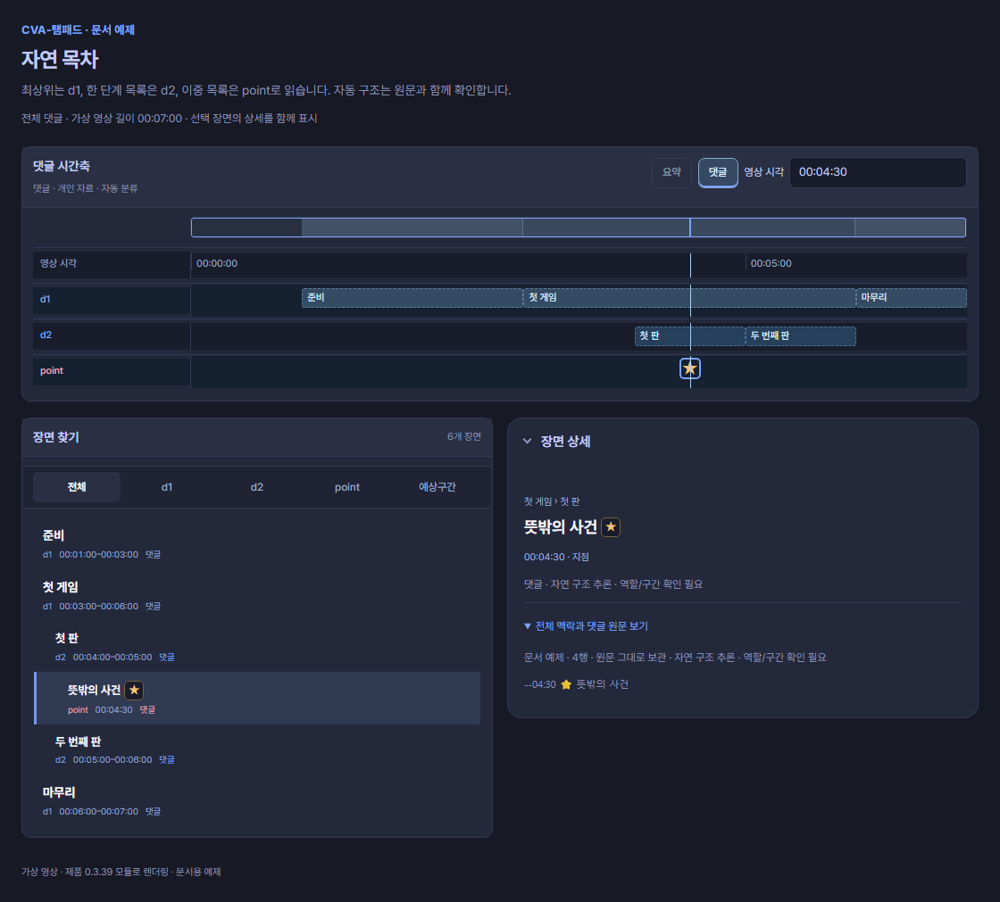
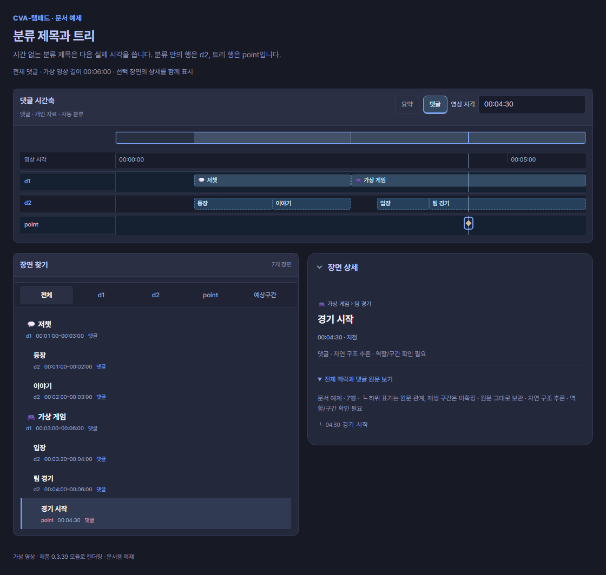
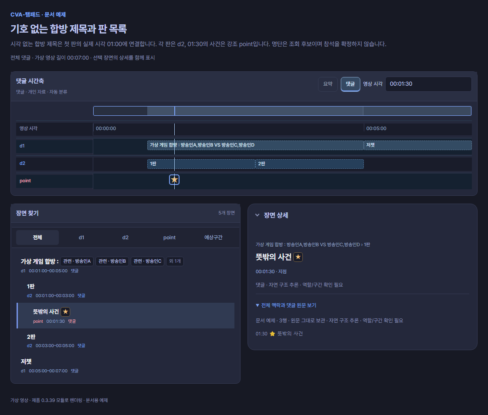
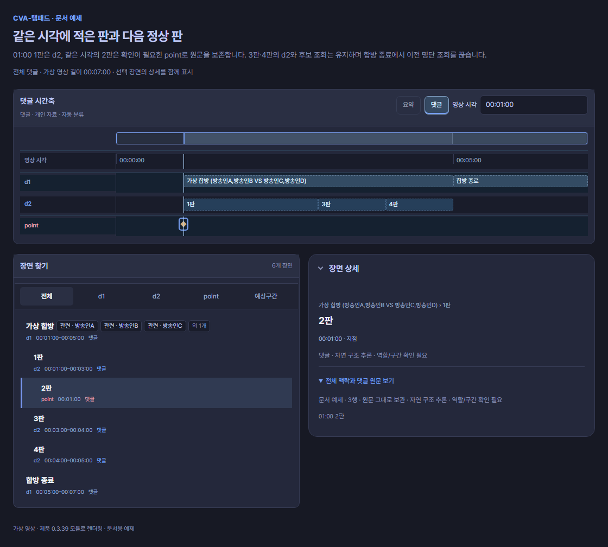
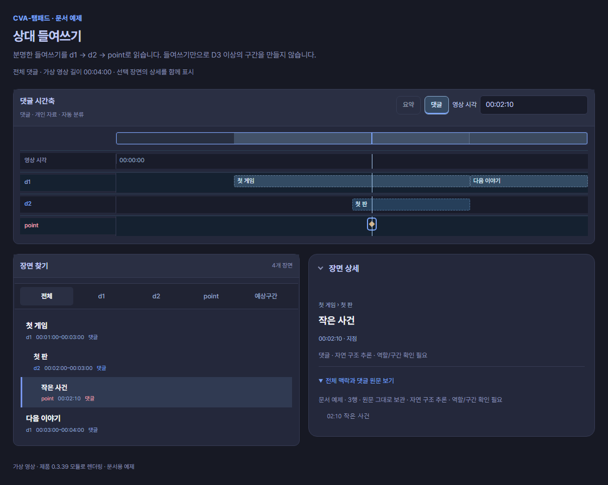
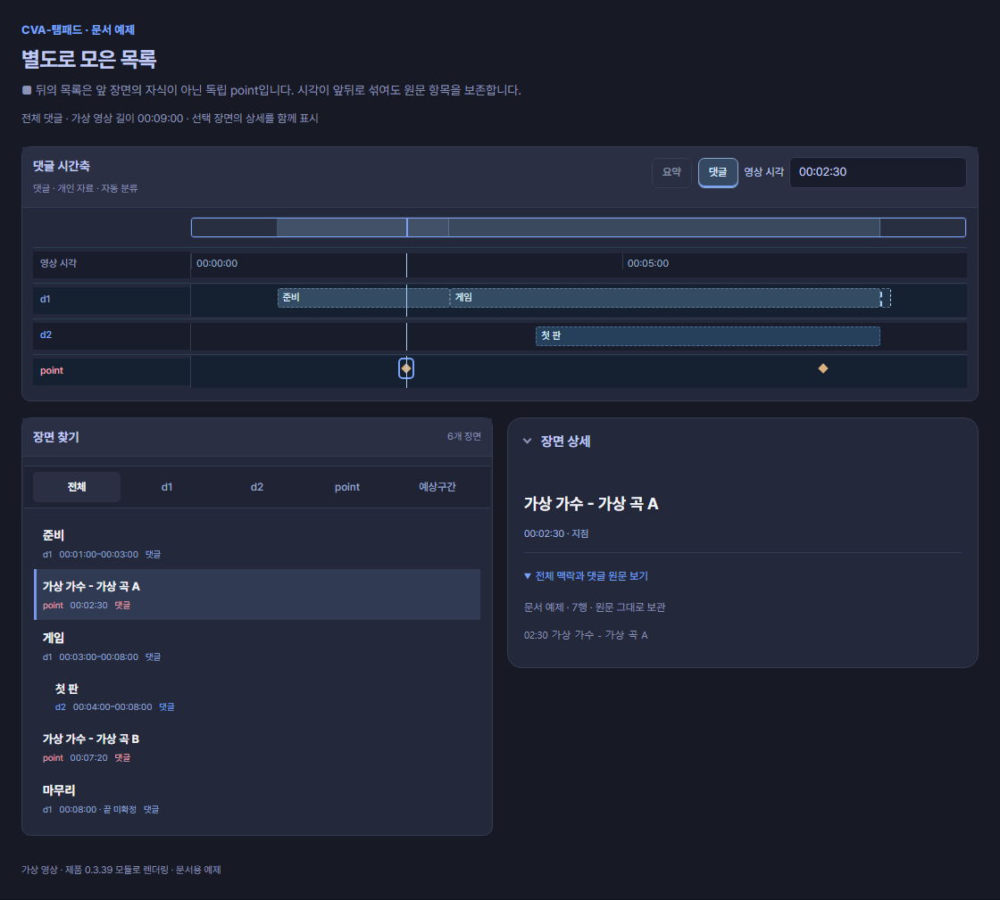
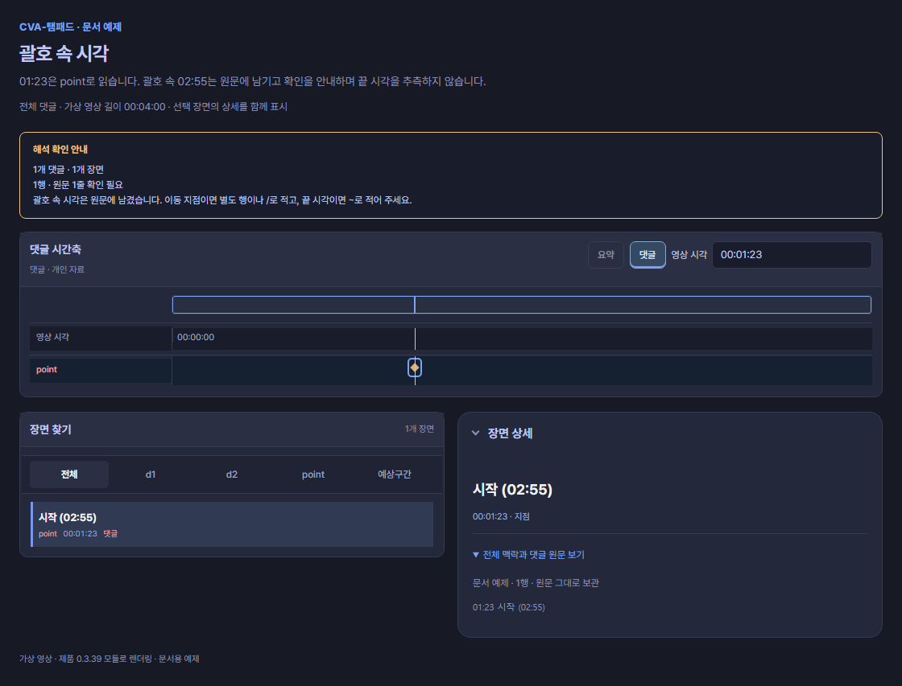
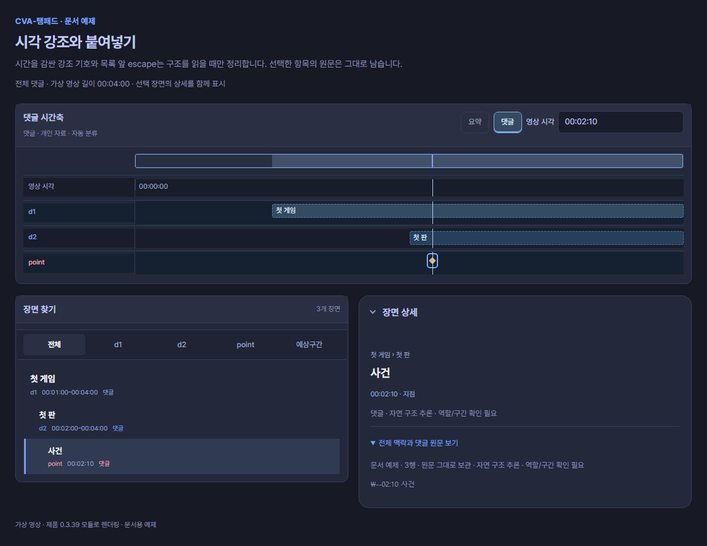

기존 댓글 읽기
작성자가 사용한 목록 구조를 읽되, 구조가 모호하면 원문과 이동 시각을 먼저 보존합니다.
괄호·번호·콜론도 읽습니다
아래는 명시 제목과 여러 시각 표기를 섞은 예제입니다. 다시 작성하지 않고 가져온 뒤 미리보기에서 구조를 확인할 수 있습니다.
# **00:01:00** 게임 시작 (합방: 방송인A, 방송인B)
## [00:02:00] 1판
- (00:02:30) ⭐ 재미있는 순간
##00:05:00 2판
#00:10:00 다음 게임읽는 결과: D1 → D2 → Point → D2 → D1입니다. 첫 게임의 명단은 그 안의 1판·순간·2판에 이어지며, 다음 게임에는 자동으로 이어지지 않습니다. ⭐는 작성자의 강조이고 컷 선택이나 하이라이트 승인이 아닙니다. 구간 끝은 다음 같은 단계·상위 경계, 부모 끝, 확인된 영상 길이에 따라 계산합니다.
1) [00:01:00] 시작
2. 00:02:00: 이야기
【00:03:00】 게임읽는 결과: Point 3개입니다. 번호·괄호·콜론만으로 D1·D2를 만들지 않습니다. 선두 괄호에는 완전한 시각만 들어 있어야 하고 뒤 제목은 공백이나 콜론으로 구분합니다. [00:01:00]제목처럼 붙은 일반 괄호 제목이나 [00:01:00](주소) 링크를 새 장면으로 추측하지 않습니다.
손상된 행은 확인하며 이어 읽습니다
# 02:99 잘못된 제목이나 ## 02:00 ~ 02: 끝이 잘린 제목처럼 손상된 경계는 원문과 확인 안내로 남깁니다. 해당 경계를 지나야 하는 앞 구간의 끝은 미확정으로 두며, 뒤의 정상 장면과 명시 범위는 유지합니다. 손상된 D1·D2를 통과해 이전 부모나 합방 명단을 이어 붙이지 않습니다.
 ,  , 같은 공백 표기와 목록 앞 escape는 해석할 때만 정리합니다. 일반 HTML·모든 엔티티를 변환하거나 댓글 원문을 다시 쓰지는 않습니다. 파일 선택과 미리보기만으로 기존 댓글·컷·선택·시각 보정이 바뀌지 않습니다.
자연 목차
01:00 준비
03:00 첫 게임
- 04:00 첫 판
--04:30 ⭐ 뜻밖의 사건
- 05:00 두 번째 판
06:00 마무리
화면에서 읽기: 큰 주제는 d1, 한 단계 목록은 d2, 이중 목록의 04:30은 강조 point입니다. 원문에 끝이 없는 구간은 확인 가능한 경계에서 계산하며 자연 구조 추론 · 역할/구간 확인 필요 안내를 남깁니다.
최상위 행은 주제 d1, 단일 목록은 장면 d2, 이중 목록은 순간 point로 읽습니다. 명시 # 문법에서의 -는 계속 순간입니다. 구조 없는 단일 목록도 순간입니다.
💬 저챗
01:00 등장
02:00 이야기
🎮 가상 게임 | 03:00
03:20 입장
04:00 팀 경기
└ 04:30 경기 시작
화면에서 읽기: 저챗 d1은 다음 실제 시각 01:00에서 시작합니다. 가상 게임 d1은 03:00에서 시작하고, 분류 안의 항목은 d2, 트리의 04:30은 point로 표시됩니다. 시간 없는 제목 때문에 00:00 항목을 추가하지 않습니다.
시간 없는 💬 저챗은 다음 실제 시각 01:00을 시작으로 사용합니다. 분류 안의 행은 장면, 트리 행은 순간입니다. 0초를 만들어 넣지 않습니다. 자유 제목은 모두 분류로 승격하지 않습니다. 지원하는 분류 표식이나 반복된 중첩 목록, 아래의 판 목록처럼 구조 근거가 있어야 합니다.
기호 없는 제목과 판 목록
합방·내전 제목이나 짧은 게임 제목 뒤에 판 목록을 적은 댓글도 읽습니다. 원문에 #·##를 추가하지 않아도 미리보기에서 역할을 확인할 수 있습니다.
가상 게임 합방 : 방송인A,방송인B VS 방송인C,방송인D
01:00 1판
01:30 ⭐ 뜻밖의 사건
03:00 2판
05:00 저챗
읽는 결과: 합방 제목 d1 → 1판 d2 → 사건 point → 2판 d2 → 저챗 d1입니다. 제목은 첫 실제 판의 01:00을 시작으로 사용합니다. 제목 원문 행과 시각을 제공한 판 행을 각각 보존하며, 제목 때문에 00:00 장면을 만들지 않습니다. ⭐는 사건의 강조이고 참석·컷 승인이 아닙니다.
시간 없는 짧은 제목이나 완전한 괄호 명단은 두 판 이상의 추가 근거가 있을 때 잠정 d1/d2 묶음이 됩니다. 예를 들어 첫 줄을 가상 게임 또는 (방송인A,방송인B VS 방송인C,방송인D)로 바꿔도 두 판으로 구조를 미리볼 수 있습니다. 이름 없는 제목에서 방송인을 만들어내지는 않습니다. 1판, 제1판, 두 번째 판, 마지막 라운드, 1R, Round 1, Game 2 같은 판 표기를 읽습니다.
긍정적인 합방·내전·함께 플레이 제목은 바로 뒤 판이나 목록 구조와 연결할 수도 있습니다. 반대로 판 목록만 있거나 짧은 일반 제목·명단 뒤에 한 판만 있으면 부모를 만들지 않습니다. 시간이 있는 합방 시작 뒤의 구조 근거가 약하면 기존 point를 유지하고 검색 후보의 맥락만 연결합니다. point가 긴 장면으로 바뀐다는 뜻은 아닙니다.
판 사이의 [P]·깊은 --·└·ㄴ 사건은 순간으로, 명시한 시작~끝은 기존 범위로 유지합니다. 명시 제목·태그의 역할을 판처럼 보인다는 이유로 바꾸지 않습니다. 구조와 구간은 자연 구조 추론 · 역할/구간 확인 필요 안내에서 확인하세요. 명단 앞뒤 연결과 후보의 뜻
같은 시각의 판도 보존합니다
가상 합방 (방송인A,방송인B VS 방송인C,방송인D)
01:00 1판
01:00 2판
03:00 3판
04:00 4판
05:00 합방 종료
읽는 결과: 합방 제목과 첫 판은 01:00을 공유합니다. 중복된 2판은 첫 판 아래의 확인이 필요한 point로 남고, 3판·4판은 d2입니다. 원문 행을 버리거나 길이 0인 판 구간을 만들지 않습니다. 이 예제의 05:00 합방 종료는 새 d1 제목이며 이전 합방 후보의 조회 맥락이 끝나는 경계입니다.
같은 합방 아래의 중복 point 때문에 뒤의 정상 판 후보를 지우지는 않습니다. 다만 독립된 명시 목차가 같은 시각에 있거나, 이전 d1과 새 제목의 첫 판 시각이 겹쳐 소속이 모호하면 확인 안내를 유지합니다. 역순·손상 행까지 자동으로 정상 계층으로 고치지는 않습니다. 확인해야 하는 경계
명확한 상대 들여쓰기
01:00 첫 게임
02:00 첫 판
02:10 작은 사건
03:00 다음 이야기
화면에서 읽기: 두 칸 안쪽의 첫 판은 d2, 네 칸 안쪽의 작은 사건은 point입니다. 다음 이야기는 새 d1입니다. 들여쓰기의 깊이를 그대로 d3·d4 구간으로 늘리지 않습니다.
공통으로 붙은 여백을 제외한 뒤, 두 칸 이상·탭·전각 공백처럼 분명하게 안쪽으로 들어간 시각 행을 읽습니다. 주제 d1 아래 첫 안쪽 행은 장면 d2, 더 깊은 행은 순간입니다. 들여쓰기만으로 여섯 단계 구간을 발명하지 않습니다.
전체 목록을 똑같이 들여쓴 경우에는 단순 여백입니다. 한 칸의 우연한 공백이나 시간 없는 일반 문장으로 부모를 만들지 않습니다. 자동 구조는 미리보기에서 확인하세요.
별도로 모은 목록
01:00 준비
03:00 게임
04:00 첫 판
08:00 마무리
■
02:30 가상 가수 - 가상 곡 A
07:20 가상 가수 - 가상 곡 B
화면에서 읽기: 앞부분은 d1/d2 구조, ■ 뒤의 02:30·07:20은 독립된 point입니다. 음악 항목을 앞 게임의 자식으로 붙이지 않습니다. 화면은 영상 시각 위치에 표시하되 원문 순서와 출처를 보존합니다.
단독 ■는 새 목록의 경계입니다. 뒤의 음악 목록은 앞 게임의 하위 구간으로 붙이지 않고 독립된 순간으로 읽습니다. ---, ***, ___ 같은 단독 구분선도 경계로 읽습니다. 일반 문장 속 ■는 경계가 아닙니다.
곡·공연 목록, 별도로 모은 중요한 순간, 다시 본 장면 색인처럼 시각이 앞뒤로 섞일 수 있습니다. 시간 순으로 되돌아간다는 이유만으로 삭제하지 않습니다. 빈줄은 가독성을 위한 여백이며 독립 목록의 확정 경계가 아닙니다.
괄호 속 시각은 확인해 주세요
01:23 시작 (02:55)
화면에서 읽기: point는 01:23 하나입니다. 02:55 표식이나 01:23–02:55 구간은 만들어지지 않습니다. 괄호 시각 확인 안내와 원문을 미리보기에서 살펴봅니다.
01:23은 이동 지점으로 읽고, (02:55)는 원문에 남긴 뒤 괄호 시각 확인을 안내합니다. 괄호의 뜻은 실제 시작, 참고 지점, 정정 등으로 다를 수 있어 자동으로 두 번째 항목이나 끝 시각을 만들지 않습니다.
두 이동 지점을 뜻한다면 01:23 / 02:55 시작처럼 명시하세요. 시작과 끝이라면 역할이 있는 01:23 ~ 02:55 [메모] 시작 구간처럼 적으세요. 기존 댓글을 수정해야 가져올 수 있다는 뜻은 아닙니다. 모호한 부분을 미리보기에서 확인하기 위한 안내입니다.
붙여넣기와 원문 보존
**01:00** 첫 게임
- __02:00__ 첫 판
\--02:10 사건
화면에서 읽기: 시각 강조와 목록 앞 escape를 읽기용 구조에서 정리해 d1·d2·point를 표시합니다. 원문 표기는 따로 보존합니다. 화면에 보이는 결과가 원문을 수정했다는 뜻은 아닙니다.
강조된 시각과 붙여넣기 과정에서 생긴 목록 기호·공백도 읽을 수 있습니다. 원문은 그대로 남습니다.
원글과 답글
선택한 답글은 별도 원문입니다. 원글 관계, 같은 시각의 서로 다른 설명, 오차 안내를 보존합니다. 같은 작성자의 선택한 답글을 이어 읽는 기능에서도 원문 출처는 유지합니다. 다른 사람의 답글은 별도로 확인하세요. 별칭은 선언한 원문 안에서만 적용합니다.
시각만 여러 개 적은 01:00 02:00 03:00도 세 순간으로 읽습니다. 첫 장면 [01:00] 두 번째 장면 [02:00]은 각 설명을 각 시각에 연결합니다.
원글의 작성자를 확인할 수 있는 답글에서는 @작성자 03:20 장면 설명처럼 이름 바로 뒤에 붙은 시각도 읽을 수 있습니다. 선택한 원글과 답글의 관계를 함께 확인하세요.